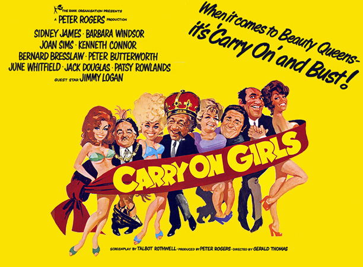
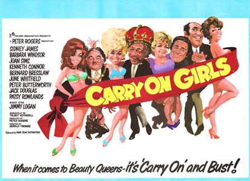

Peter Rogers
Ron Tarr (uncredited)
The seaside town of Fircombe is facing a crisis – it's always raining and there's nothing for the tourists to do. Councillor Sidney Fiddler (Sid James) hits on the notion of holding a beauty contest. The mayor, Frederick Bumble (Kenneth Connor), is taken with the idea but feminist councillor Augusta Prodworthy (June Whitfield) is outraged and storms out of the meeting. The motion is carried in Augusta's absence, and Sidney contacts publicist Peter Potter (Bernard Bresslaw) to help with the organisation.
Sidney's girlfriend, Connie Philpotts (Joan Sims), runs a local hotel and soon her residents - including the eccentric Mrs Dukes (Joan Hickson) and the randy old Admiral (Peter Butterworth) - are outnumbered by putative models, including diminutive biker Hope Springs (Barbara Windsor) and tall, buxom Dawn Brakes (Margaret Nolan).
A catfight orchestrated by Hope after thinking Dawn has stolen her bikini provides better newspaper copy than bringing a donkey off the beach which, despite the bucket and spade of hotel porter William (Jack Douglas), ruins the plush carpets. Augusta's son, press photographer Larry (Robin Askwith), is hired to document the donkey stunt and snaps the catfight that has the Mayor losing his trousers, then gulps his way through a nude photo shoot with Dawn. The Mayor's wife, Mildred (Patsy Rowlands), joins Prodworthy's bra-burning movement and plots the downfall of the Miss Fircombe contest on the pier.
Peter Potter reluctantly becomes a man in a frock for another publicity gimmick for the television show Women's Things, presented by Cecil Gaybody (Jimmy Logan) and produced by Debra (Sally Geeson). Prodworthy and butch feminist Rosemary (Patricia Franklin) call in the police (David Lodge and Billy Cornelius) to investigate the male pageant contestant but Peter's previously prim girlfriend, Paula (Valerie Leon), has a makeover and turns out to be very buxom and glamorous, and steps into the breach as the mysterious girl. Prodworthy's gang put "Operation Spoilsport" into action, sabotaging the final contest with water, mud and itching powder. With an angry mob after his blood, Sidney makes his escape on a go-kart, finds Connie has taken all the money and then speeds away with Hope on her motorcycle.
Filming dates: 16 April - 25 May 1973.
Interiors: Pinewood Studios, Buckinghamshire.
Exteriors: (1) Brighton's West Pier. (2) The Palace Pier, Brighton was used a couple of years earlier in Carry On at Your Convenience. (3) Slough Town Hall, Slough. (4) Clarges Hotel, Brighton. (5) Brighton Beach, Brighton. (6) Marylebone Railway Station, London.
The film marked a slightly more risqué treatment of the topic with more nudity and openly sexual jokes than previous films. Discreet cuts by the BBFC (mainly to saucy dialogue and the hotel fight sequence between bikini-clad contestants played by Barbara Windsor and Margaret Nolan) enabled the film to gain the more commercially acceptable A certificate (open to families) than the more restrictive AA certificate, barring entry to the under-fourteens.
Watch out for Robin Askwith's turn as Augusta Prodworthy's son, star of the 'Confessions Of' films that would go on to slaughter the Carry On's at the box office. Askwith was employed due his his strong performance in the Rogers/Thomas film of the film version of Bless This House.
June Whitfield dubbed Valerie Leon's voice in the film. History has forgotten as to why this happened.
Renee Houston, Vic Spanner's Mother in Carry On At Your Convenience, was originally earmarked for the role of Miss Dukes. Unfortunately, her role was cancelled due to health reasons.
Four policemen were used to protect Margaret Nolan's nude scene with Robin Askwith on Brighton beach.
Barbara Windsor couldn't ride a motorbike, so her parts were doubled by a stuntman. This is rather obvious on viewing the finished film!
The Whippit Inn - " no means a classic entry in the series, but it remains entertaining all the way through and Sid's getaway at the end of the film is particularly enjoyable. It has more near-the-knuckle jokes than previous films, but any film in which Peter Butterworth (as a randy Admiral) spies a pair of bristols through his telescope, which naturally causes the implement to start smoking, gets our vote."
